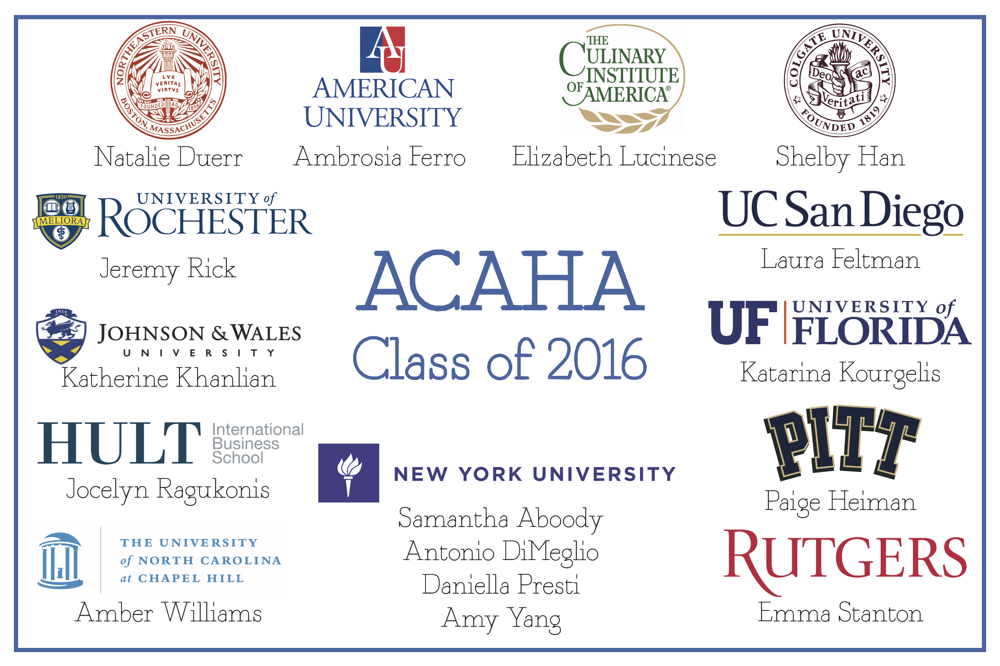
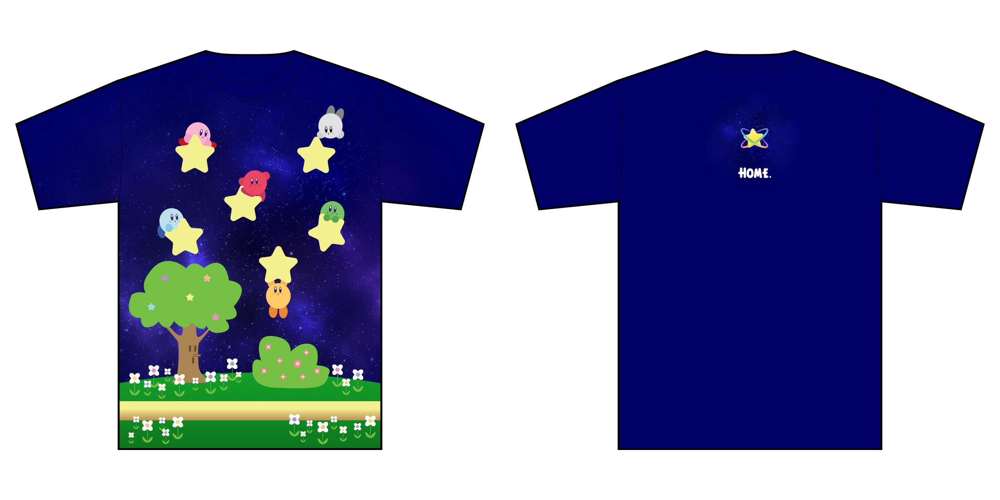
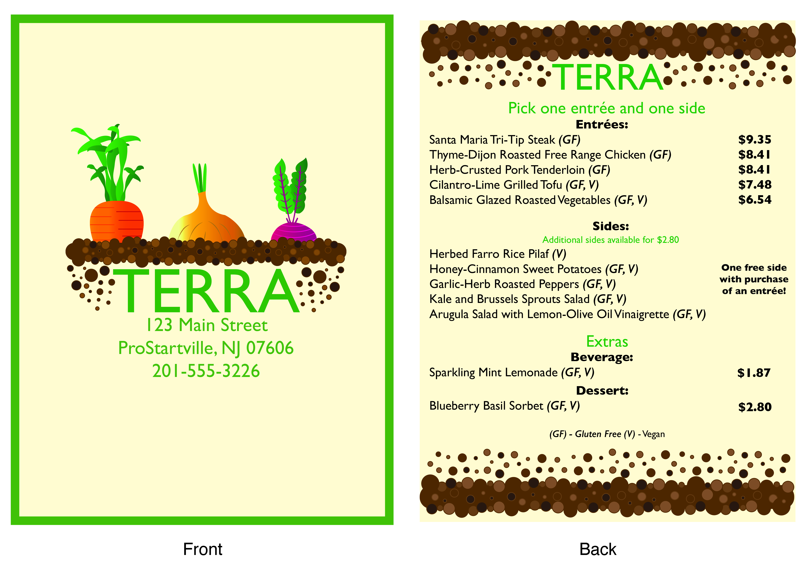
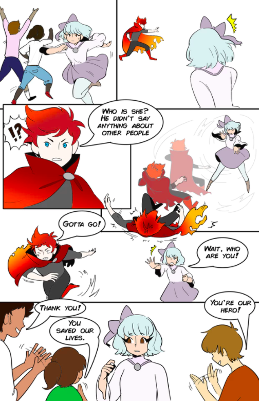
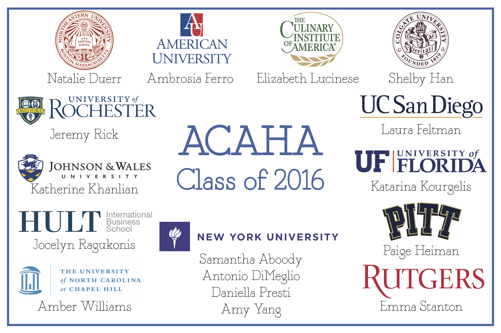
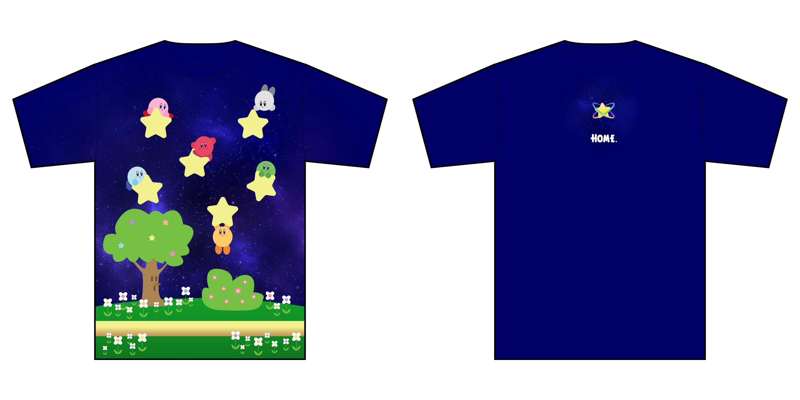
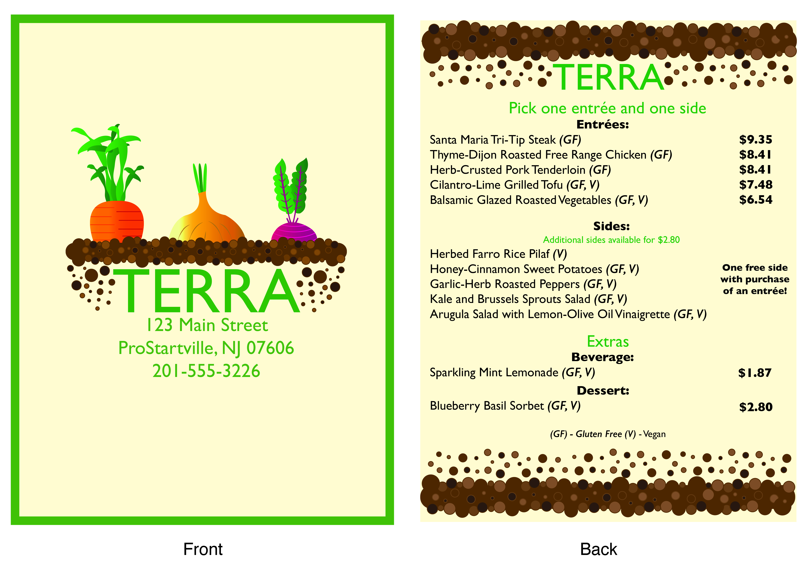
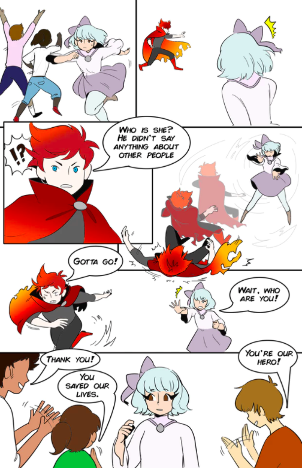

Things I have worked on throughout the years that don't fit in a category.
I've worked on projects personally, for friends, and for teachers ever since I've become interested in design. These projects do not fit in any other category and have been compiled here. Information about each project can be found in the caption for each image.
College Banner, 2' by 3', June 2016, InDesign and Illustrator
T-Shirt design, August 2016, Illustrator
Characters are owned by Nintendo and Hal Laboratory

T-Shirt design, August 2016, Illustrator
Characters are owned by Nintendo
ProStart Menu, 8.5" by 11", January 2016, InDesign and Illustrator
Comic book collaboration (in progress), July 2016
Lines: Maariayh Mustafa, Color: Natalie Duerr, Story: Natalie Duerr and Maariyah Mustufa


Characters are owned by Nintendo and Hal Laboratory
Characters are owned by Nintendo


Lines: Maariayh Mustafa, Color: Natalie Duerr, Story: Natalie Duerr and Maariyah Mustufa